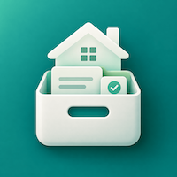

集中记录家电与家庭设备、保修、维护历史和计划，需要时快速找到完整信息。
设备档案 · 维护计划 · 本地保存
用简洁的设备档案连接保修、照片、维护计划和历史记录。
记录品牌、型号、序列号、位置、购买与保修日期，并保存设备、凭证和铭牌照片。
安排清洁、保养、检查和维修计划，完成后自动沉淀为可追溯的维护记录。
创建包含设备资料和照片的本地备份，并按需生成 CSV 数据与 PDF 维护报告。
无需注册账号；设备、维护、计划和照片由 App 在本地管理。